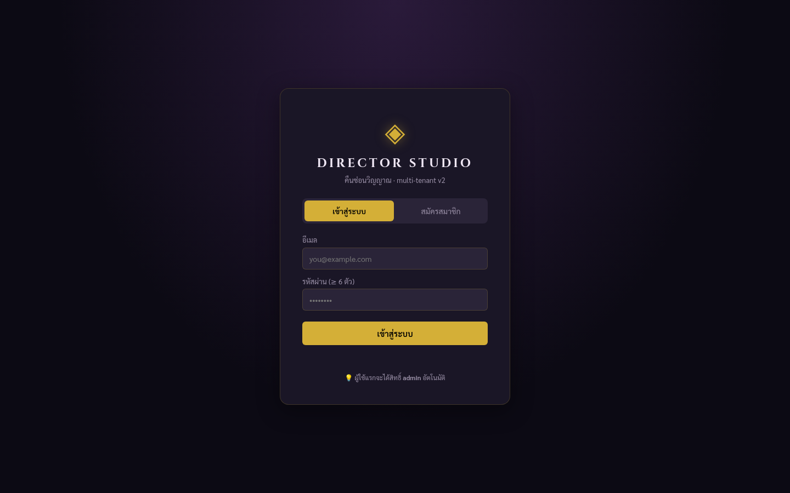
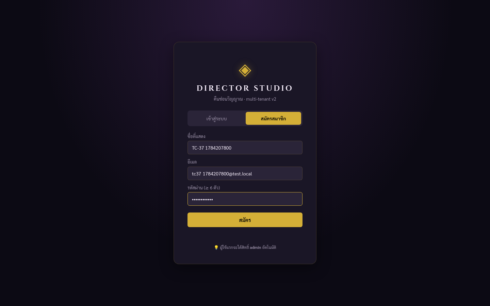
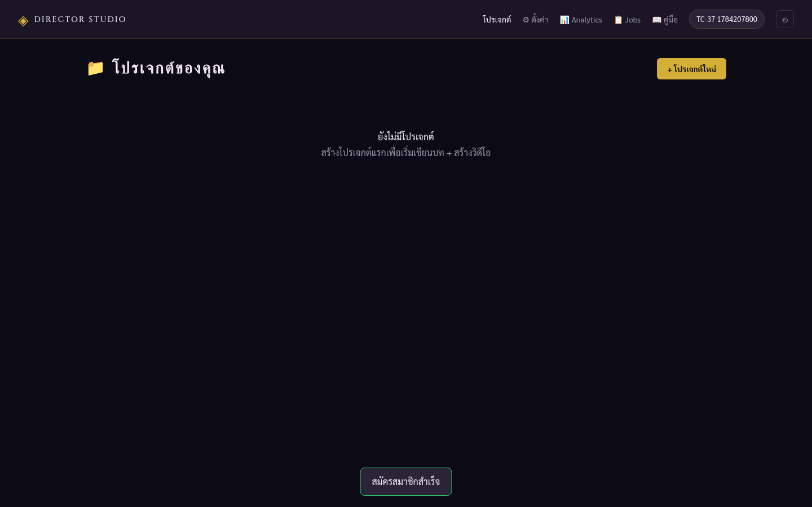
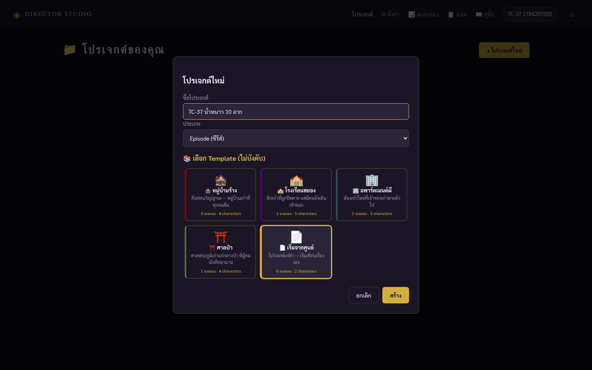
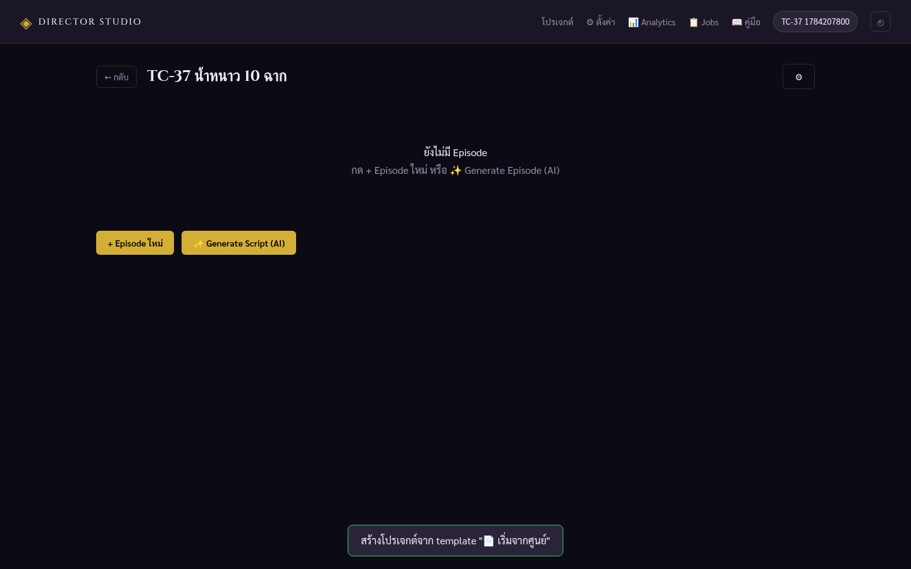
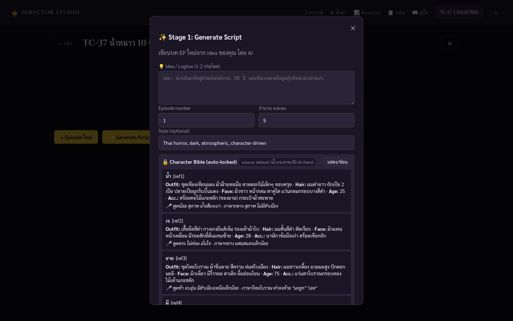
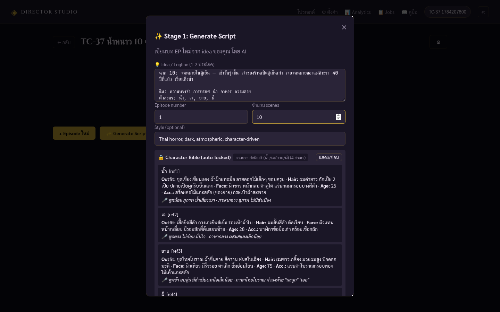
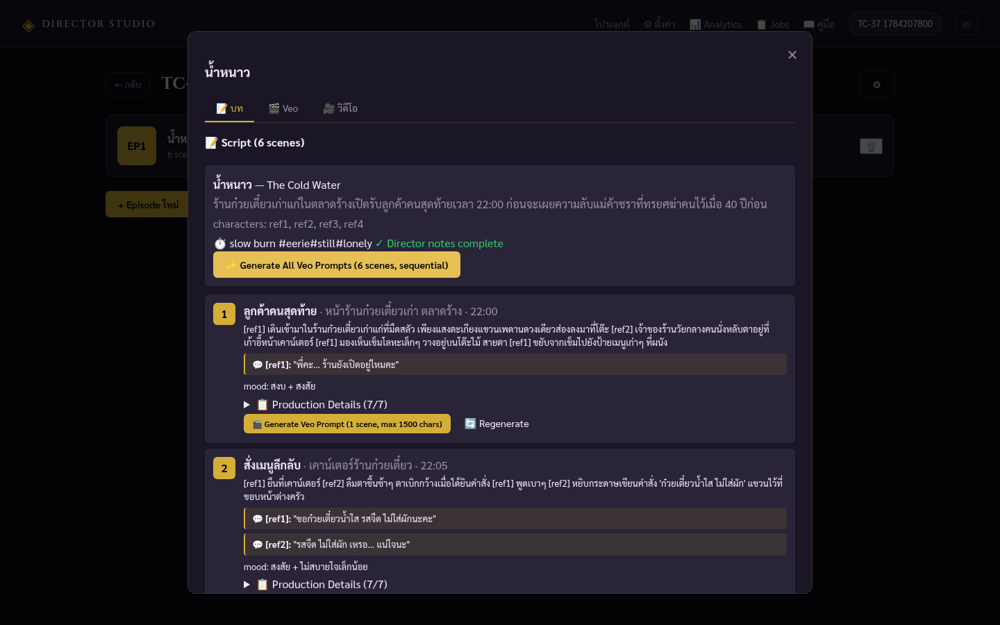
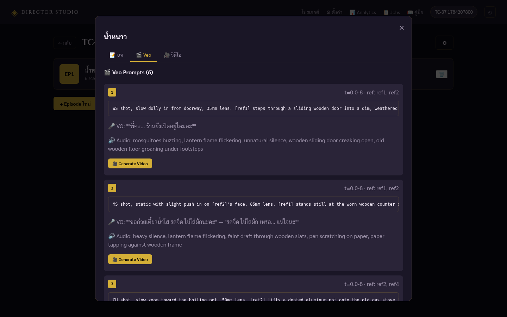
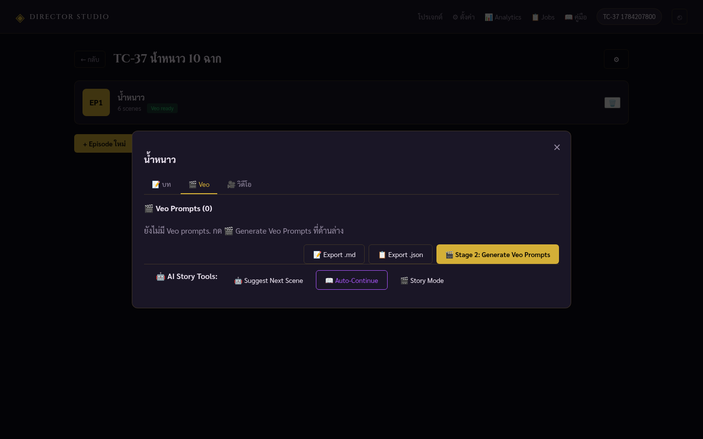

Director Studio เป็นเว็บแอปที่ช่วยให้คุณสร้างหนัง/ซีรีส์สั้นจาก ไอเดีย จนถึง วิดีโอจริง ได้ในที่เดียว ผ่าน 3 ขั้นตอนหลัก:
| Stage | ชื่อ | Input | Output | เวลาโดยประมาณ |
|---|---|---|---|---|
| Stage 1 | เขียนสคริปต์ | ไอเดียเรื่อง (ข้อความ) | JSON สคริปต์ที่มีฉาก + ตัวละคร + บทพูด | 1-3 นาที |
| Stage 2 | สร้าง Veo Prompts | สคริปต์ | Prompt ภาษาอังกฤษสำหรับ Google Veo | 30-60 วินาที |
| Stage 3 | สร้างวิดีโอจริง | Veo Prompts + รูปตัวละคร | วิดีโอ MP4 จริง | 2-5 นาที/ฉาก |
เปิดเบราว์เซอร์ไปที่: https://directorstudio.sj88ai.com/

คลิกที่แท็บ "สมัครสมาชิก" (อยู่ข้างๆ เข้าสู่ระบบ)
สมชาย ใจดีyourname@example.com
รอ 2-3 วินาที ระบบจะพาคุณเข้าสู่หน้าโปรเจกต์

อยู่มุมขวาบนของหน้าโปรเจกต์
เช่น "ผีข้าวมันไก่" หรือ "รักในสายฝน" — ชื่ออะไรก็ได้ที่คุณจำได้

ระบบจะสร้างโปรเจกต์เปล่าๆ พร้อม EP แรก (EP1) ให้อัตโนมัติ

คลิกที่การ์ด EP1 (หรือ EP ที่ต้องการ)
Modal จะเปิดขึ้นมาให้กรอกไอเดียเรื่อง

ในช่อง "ไอเดียเรื่อง" เขียนเรื่องย่อของคุณ ยิ่งมีรายละเอียดมาก ยิ่งได้สคริปต์ดี
เรื่อง: [ชื่อเรื่อง] — [ประเภท] (เช่น Thai horror, romance, comedy)
[สรุปเรื่อง 1-2 บรรทัด]
ฉาก 1: [ชื่อฉาก] — [ใครทำอะไร] (เวลา/สถานที่, องค์ประกอบสำคัญ)
ฉาก 2: [ชื่อฉาก] — ...
ฉาก 3: [ชื่อฉาก] — ...
ธีม: [keyword 1, keyword 2, ...]
ตัวละคร: [ชื่อ 1, ชื่อ 2, ...]
ใส่จำนวนฉากที่ต้องการ (เช่น 10) — LLM อาจจัดให้น้อยกว่านั้นถ้าเล่าเรื่องเหมาะสม
รอ 1-3 นาที — LLM จะสร้างสคริปต์ JSON ออกมา

เพื่อบันทึกสคริปต์ลงโปรเจกต์ (ก่อนปิด modal)
เมื่อ Stage 1 เสร็จ คุณจะอยู่ในแท็บ Script ของ EP1
ระบบจะถาม confirm → กด "OK"
เมื่อเสร็จ ระบบจะแสดงผล เช่น ✅ 6/6 scenes done และ auto-reload EP
คลิกแท็บ Veo (อยู่ข้างแท็บ Script)

ระบบจะส่ง prompt ไปยัง Google Veo → รอ 2-5 นาที/ฉาก
blood, weapon, knife, gun, kill → ใช้คำอ่อนๆ เช่น "blade", "sharp object", "mysterious figure"เมื่อเสร็จ จะเห็นปุ่มเปลี่ยนเป็น ▶ Play

คลิกขวาที่วิดีโอ → Save video as...
เรื่อง "น้ำหนาว" เป็นหนังสยองขวัญไทยที่ทดสอบใน TC-37 ใช้เวลาทั้ง pipeline ประมาณ 10-15 นาที
เรื่อง: น้ำหนาว (The Cold Water) — Thai horror, 10 scenes, 3-Act
แม่ค้าชราในร้านก๋วยเตี๋ยวเก่าแก่ทรยศฆ่าลูกค้า 40 ปีที่แล้ว ตอนนี้ลูกค้าคนสุดท้ายเข้ามา
ฉาก 1: ลูกค้าคนสุดท้าย — น้ำเข้าร้านก๋วยเตี๋ยวเวลา 22:00 เจ้าของร้านผู้ชายนั่งหลับ ร้านมืด มีเข็มอยู่บนโต๊ะ
ฉาก 2: สั่งเมนูลึกลับ — น้ำสั่งก๋วยเตี๋ยวน้ำใส เจ้าของร้านตาเบิกกว้าง กระดาษสั่งเขียนว่า ไม่ใส่ผัก
ฉาก 3: หม้อน้ำเดือด — เจ้าของร้านใส่หม้อน้ำในครัว น้ำเดือดพุ่ง แต่ไอน้ำเย็นจัด กลิ่นเน่า
ฉาก 4: ถ้วยแตก — น้ำยกถ้วยขึ้น ถ้วยแตกกลางพื้นเอง น้ำในถ้วยไหลเป็นสีดำ กลิ่นเหม็นคาว
ฉาก 5: แม่ค้าชราปรากฏ — เจ้าของร้านหันไปเห็นแม่ค้าชรายืนที่ประตูหลัง ถือผ้าเช็ดมือสีแดง
ฉาก 6: บ่อน้ำต้องสาป — แม่ค้าชราพาน้ำไปบ่อน้ำหลังร้าน น้ำในบ่อดำสนิท ใบหน้าแม่ค้าสะท้อนในน้ำไม่ตรงกับใบหน้าจริง
ฉาก 7: ตะเกียงดับ — น้ำเดินออกจากร้าน ตะเกียงในมือเจ้าของร้านดับ ถนนเปลี่ยว มืดสนิท
ฉาก 8: เงาไล่ทัน — น้ำเดินเร็ว เงาดำยาวไล่ทัน น้ำหันกลับ เห็นเงายืนห่าง 2 เมตร
ฉาก 9: ศาลพระภูมิ — น้ำวิ่งถึงศาลพระภูมิ ผีแม่ค้าชราปรากฏบนศาล บอกว่า เธอกินน้ำต้องสาปไปแล้ว
ฉาก 10: จดหมายในตู้เย็น — เช้าวันรุ่งขึ้น เจ้าของร้านเปิดตู้เย็นเก่า เจอจดหมายของแม่ค้าชรา 40 ปีที่แล้ว เขียนถึงน้ำ
ธีม: ความทรงจำ การทรยศ น้ำ อาหาร ความตาย
ตัวละคร: น้ำ, เจ, ยาย, ผีสถานที่: หน้าร้านก๋วยเตี๋ยวเก่า ตลาดร้าง
เวลา: 22:00
Props: เข็มโลหะเก่า, แก้วเปล่า, ประตูไม้บานเก่า
แอคชัน: น้ำเดินเข้ามาในร้านก๋วยเตี๋ยวเก่าแก่ที่มืดสลัว เพียงแสงตะเกียงแขวนเพดานดวงเดียวส่องลงมาที่โต๊ะ เจ้าของร้านวัยกลางคนนั่งหลับตาอยู่ที่เก้าอี้หน้าเคาน์เตอร์
สถานที่: ภายในร้านก๋วยเตี๋ยว หน้าเคาน์เตอร์
เวลา: 22:05
Props: กระดาษโน้ต 'ไม่ใส่ผัก', สร้อยคอไม้ของน้ำ
สถานที่: ครัวหลังร้าน มุมมืด
เวลา: 22:10
Props: หม้อน้ำเก่า, เตาแก๊ส, เข็มโลหะเก่า (วางบนชั้น)
สถานที่: โต๊ะนั่งในร้าน หน้าเคาน์เตอร์
เวลา: 22:15
Props: ถ้วยกระเบื้องแตก, น้ำดำบนพื้น
สถานที่: ร้านก๋วยเตี๋ยว มุมประตูหลัง
เวลา: 22:20
Props: ผ้าเช็ดมือสีแดง (ของยาย), สร้อยคอไม้ของน้ำ
สถานที่: หลังร้าน บ่อน้ำเก่าใต้ต้นไม้
เวลา: 22:30
Props: บ่อน้ำเก่า, สร้อยคอไม้ของน้ำ (สั่น), ผ้าเช็ดมือสีแดง (ของยาย วางบนขอบบ่อ)
WS shot, slow dolly in from doorway, 35mm lens. [ref1] steps through a sliding wooden
door into a dim, weathered noodle stall set inside an abandoned Thai night market,
her silhouette framed against the street's pale fog. A single kerosene lantern hangs
from the ceiling, casting a faint, trembling amber glow over a dark wooden table where
a small metallic needle lies abandoned. [ref2], a middle-aged man, slumps at the
counter with his eyes closed.../api/health ต้องแสดง "worker_active": > 0/llm/generate-veo-all endpoint (fixed ใน v3.5.1)
blood, weapon, kill
Settings → Veo API Key| Bug | อาการ | แก้ | Commit |
|---|---|---|---|
| Critical | worker_active=0, Stage 1 ค้างใน "queued" ไม่ทำงาน | ฟังก์ชัน get_veo_system_prompt ไม่ได้ import → เปลี่ยนเป็น get_veo_system_prompt_single |
direct fix (admin) |
| Critical | Stage 2 ทุก scene ได้ "list assignment index out of range" | เพิ่ม while len(ep['timeline']) < i+1: ep['timeline'].append(None) ก่อน assign |
direct fix (admin) |
https://directorstudio.sj88ai.com/https://directorstudio.sj88ai.com/api/healthสร้างโดย Mavis · TC-37 · 16 ก.ค. 2569 · Director Studio v3.5.1
เคล็ดลับ: ถ้าเจอบั๊ก ให้เขียน Test Case ใหม่ทันที — อย่าเป็น "วัว" 🐄